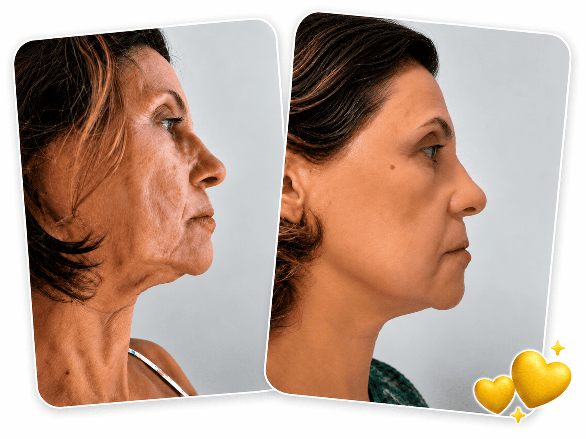
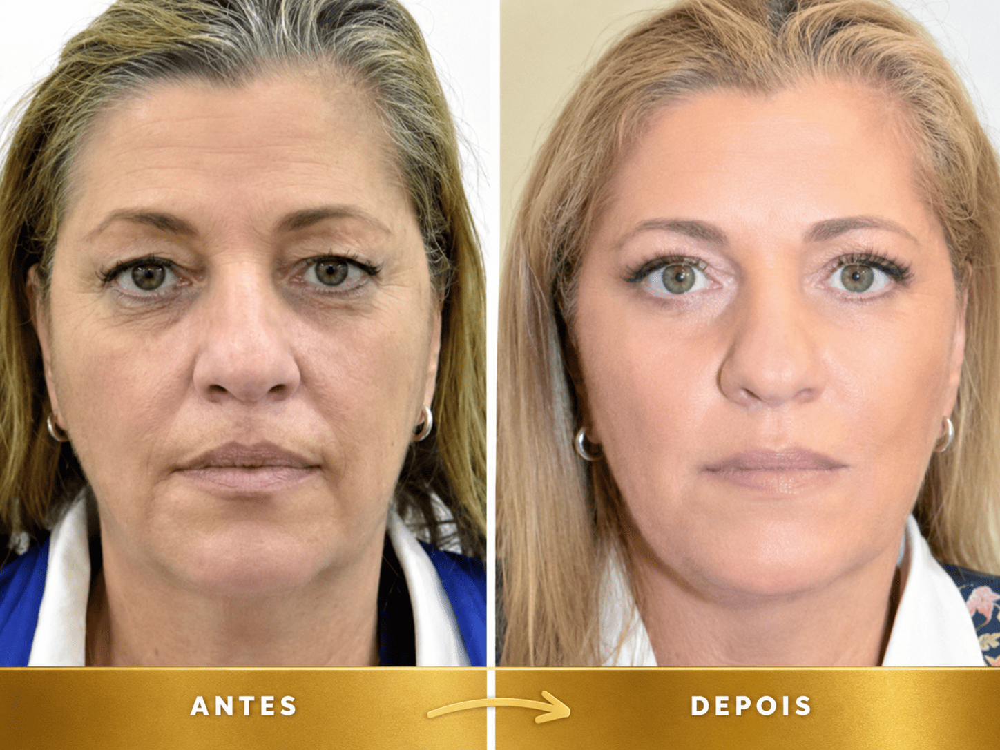
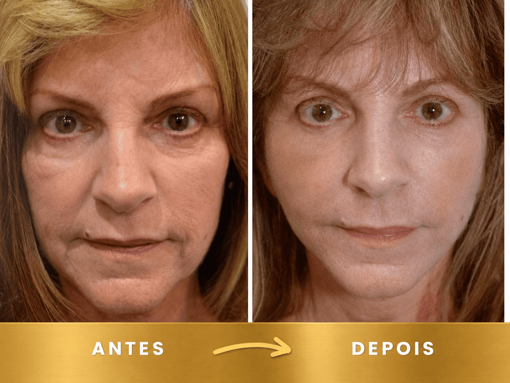
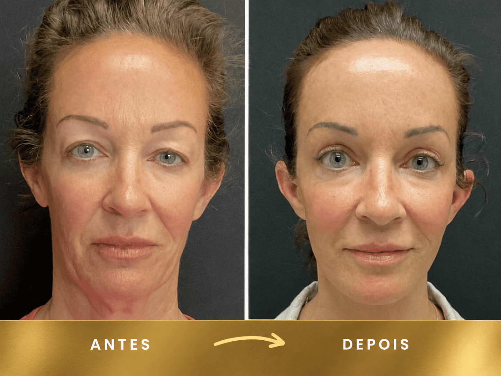
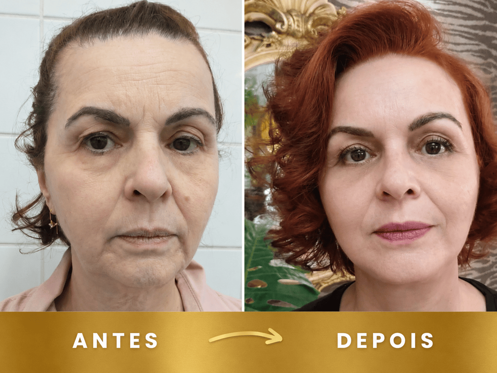
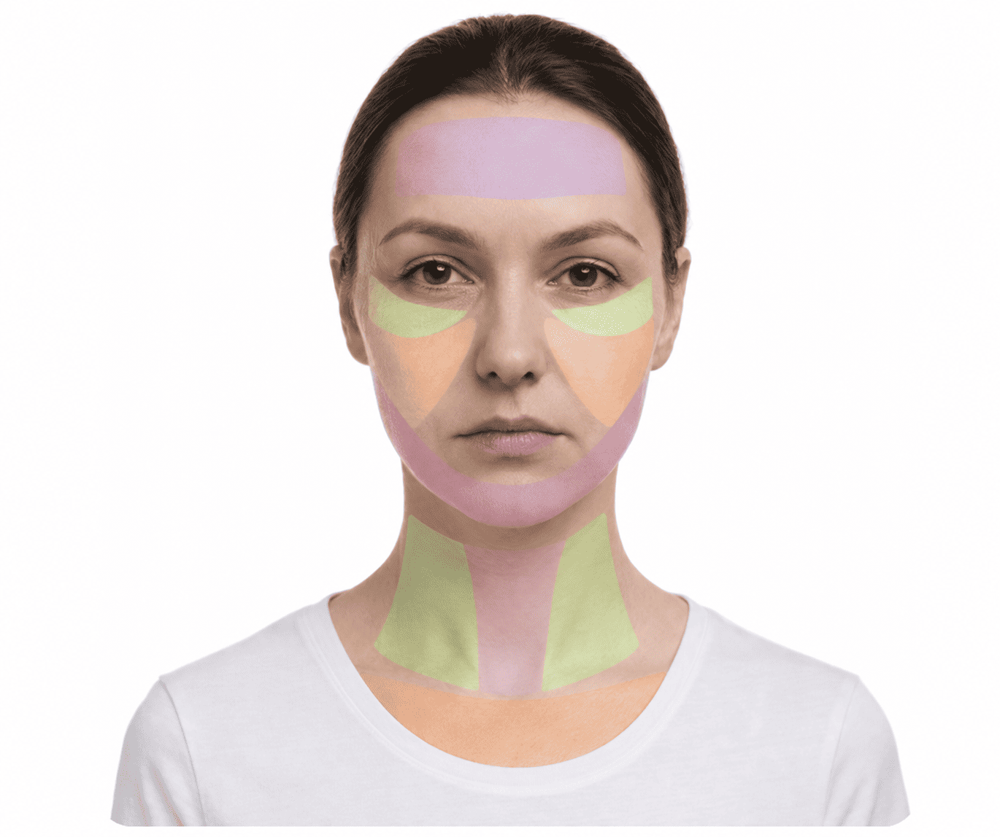

Rejuvenece hasta 20 años en 28 días con el
Botox Coreano Manual
Cargando la evaluación...

SELECCIONA TU EDAD
Para adaptar el plan a tus necesidades.
¿Cómo describirías tu piel?
Esto nos ayuda a ajustar el plan ideal para tu tipo.
¿Qué te gustaría lograr con el Botox Coreano Manual?
¿Qué zona te gustaría mejorar primero?
Lograr una piel más firme y joven ahora es más fácil
Desliza el control para comparar el antes y el después.
"¡En solo 3 semanas siguiendo el protocolo de Botox Coreano Manual, sentí que volvía a tener 30 años! Lo mejor es que puedo hacerlo en casa en solo 2 minutos. ¡Me encantó el resultado! ❤️"
¿Cuánto tiempo puedes dedicar cada día a cuidar tu piel?
El plan se adaptará a tu rutina.
¿Tienes una rutina para cuidar tu piel?
El único programa que necesitas
Este programa te ayuda a combatir los signos de la edad y a recuperar la confianza. En 4 semanas, tu piel puede verse más firme y luminosa.
Creando tu plan personalizado...





Resultado de tu evaluación
⚠️ Principales señales:
- ❌ Flacidez progresiva
- ❌ Mejillas caídas
- ❌ Mirada cansada
- ❌ Líneas marcadas en la frente
✨ El protocolo puede ayudarte a:
- ✅ Estimular la producción de colágeno
- ✅ Fortalecer los músculos faciales
- ✅ Mejorar la firmeza
- ✅ Rejuvenecer la piel
"¡Hola! Quería pasar por aquí para darles las gracias de corazón. Tengo 52 años y, después de seguir el protocolo de Botox Coreano Manual, ya no necesito maquillarme para disimular las arrugas 🙌. ¡Te juro que me veo tan joven que hasta mi esposo lo notó! Jaja. ¡Muchas gracias de verdad!"
Testimonios de quienes ya siguen el protocolo:
"Pensé que ya no había solución para las líneas de expresión alrededor de la boca y en la frente. Cuando vi los resultados después de 4 semanas siguiendo el protocolo, ¡lloré de emoción! ¡Siento que me veo hasta 10 años más joven! ¡Vale cada centavo!"
"¡Es impresionante cuánto ha mejorado la firmeza de mi piel; hasta mi esposo lo notó!"
"Es muy fácil incorporar el protocolo a mi rutina. ¡Por fin, un método sin agujas!"
"Las líneas de expresión de mi frente desaparecieron. Estaba a punto de gastar mil dólares en un tratamiento con un dermatólogo."
¡Tu plan personalizado de Botox Coreano Manual está listo! 🎉
Al final del video podrás ver tu plan personalizado. 👇🏼
Descubre el secreto del rejuvenecimiento coreano en 5 minutos diarios.
¡Tu plan de Botox Coreano Manual está listo! 🎉
Al final del video podrás ver tu plan personalizado. 👇🏼
Descubre el secreto del rejuvenecimiento coreano en 5 minutos diarios.